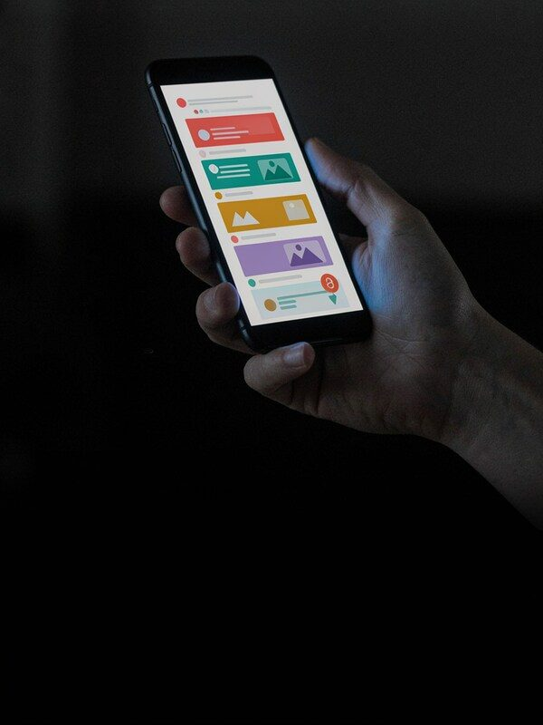
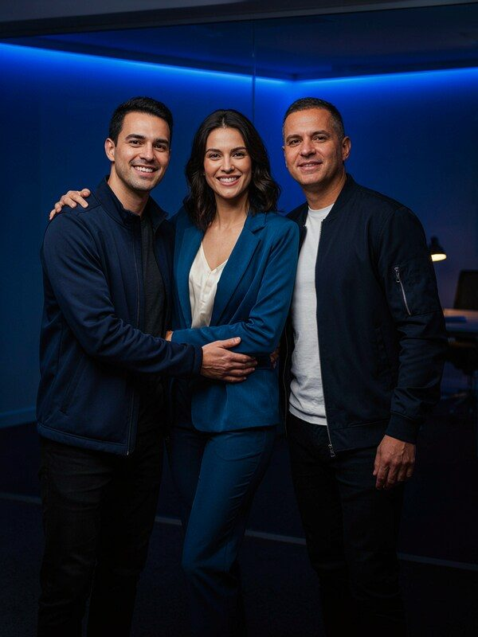
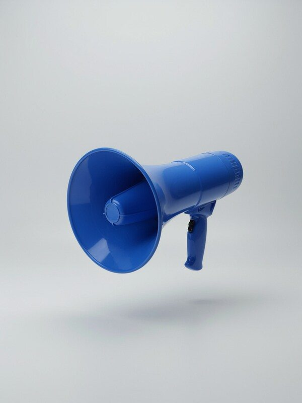

Por trás de cada post tem pesquisa de pauta, roteiro, design, legenda e leitura dos números.
Quando ninguém cuida disso, o perfil vira um mural de promoções que ninguém para pra ler.

Cada comentário e cada direct é pesquisa de mercado de graça.
As dúvidas que se repetem viram pauta dos próximos posts.
Mas atenção: isso só funciona se alguém responder todo dia.
Mesmo tom de voz, mesmas cores, mesma frequência.
É isso que faz alguém reconhecer você no feed antes de ler o nome.

Quem pergunta o preço no direct está com a carteira na mão. Cada hora sem resposta é uma chance a mais de o concorrente responder primeiro.
Ter alguém dedicado às redes é ter alguém no balcão o dia inteiro.
✕ Posta quando lembra
✕ Só fala de promoção
✕ Comentário sem resposta
✕ Ninguém sabe o que funciona
✓ Calendário fixo
✓ Conteúdo que ensina e vende
✓ Resposta no mesmo dia
✓ Decisão com base em números
É publicar com plano, repetir o que funciona e cortar o que não traz resultado.
Cortar o social media parece economia. Na prática, é deixar sem ninguém a porta mais visitada da sua empresa.
Antes de decidir, pergunte:

Toda notícia vira uma decisão pro seu negócio.
👇 Peça seu diagnóstico de conteúdo grátis
Clique no link da bio e peça seu diagnóstico de conteúdo